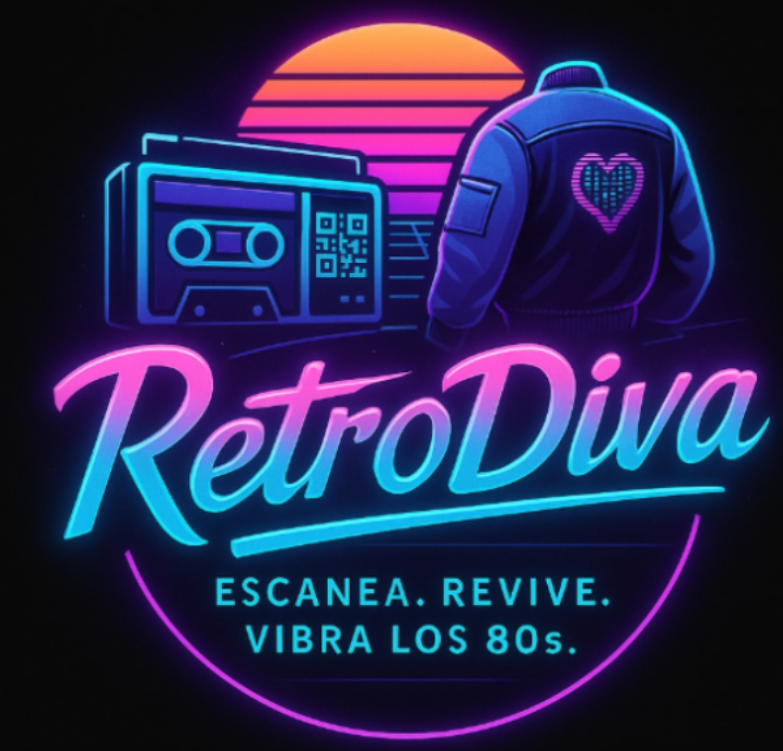
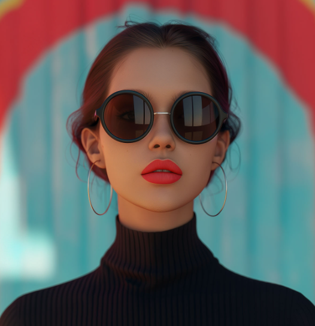

La Magia de RetroDiva
Todo comenzó con una canción de cassette, una chaqueta de mezclilla olvidada en el armario y una idea loca: ¿y si pudiéramos traer de vuelta la magia de los 80s, pero con un toque tecnológico?
Nuestra Misión
Somos más que una marca de ropa: somos una máquina del tiempo. Inspirados en la rebeldía, los colores explosivos y las frases inolvidables de los ochenta, decidimos crear prendas que no solo se vean increíbles, sino que también cuenten historias. Cada diseño lleva un pedazo de esa época dorada, combinado con tecnología interactiva que permite a nuestras clientas escanear, descubrir y revivir esos momentos icónicos.
Nuestro sueño era simple: que cada outfit fuera una experiencia, no solo una prenda. Que cada bordado, cada estampado, y cada escaneo les recordara que la vibra de los 80s sigue viva... solo que ahora puedes llevarla puesta.
El Viaje Hasta Aquí
Después de meses de soñar en grande, bocetar en servilletas y sumergirnos en el vibrante mundo de los 80s, hoy RetroDiva se ha convertido en mucho más que una idea: ¡es una comunidad en crecimiento!
Nos encontramos en una etapa emocionante, lanzando nuestra primera colección oficial: "Neón en el Alma", una línea de prendas icónicas bordadas y estampadas, acompañadas de tecnología interactiva que transforma cada outfit en una experiencia única.
Hemos logrado construir una plataforma que no solo muestra moda, sino que también revive emociones: desde la música que escuchabas en cassettes hasta esas frases que se quedaron grabadas para siempre.
El Comienzo de Una Aventura
Así nació esta aventura: una mezcla perfecta entre nostalgia, moda y tecnología. Y apenas estamos comenzando...


Sobre Nosotros
Somos un grupo de estudiantes de Ingeniería de Sistemas de Información con alma vintage y mente emprendedora. Fusionamos la lógica con el estilo para traerte una marca de ropa femenina inspirada en la vibra única de los años 80: hombreras, neón y actitud. Amamos el retro, pero no vivimos en el pasado —usamos la tecnología para que revivas lo mejor de esa época con un toque actual. ¡Bienvenida al futuro del pasado!
Brillite Rose Cayllahua Mendoza
Creativa de corazón y fan del glam ochentero. Se encarga del diseño de prendas y la identidad visual de la marca. Si ves algo con estilo, probablemente fue idea suya. Le encantan los sintetizadores... y las hojas de Excel.
Sulca Sedano, Jesus Ricardo
Apasionado por la tecnología. Se encarga del sitio web, automatizaciones y todo lo que tiene lógica (y a veces magia). Sin él, nada se mueve, ni en la web ni en el sistema.
Osorio Chalco, Mauricio Andree
El que convierte sueños en planes y números. Lidera el marketing, ventas y alianzas. Sabe exactamente cuándo lanzar un outfit... y cuándo lanzar una campaña. ¡Le pone ritmo ochentero al negocio!
Heredia Chavez Carlos Stephano
Experta en tendencias retro. Investiga, mezcla y reinventa estilos de la época para que cada prenda tenga ese flashback con estilo. ¡Su armario es un viaje en el tiempo!
Únete al equipo
En nuestro equipo valoramos la creatividad, la pasión por lo que hacemos y la capacidad de adaptarnos a los cambios. Creemos que un buen compañero no solo aporta ideas, sino también actitud, compromiso y ganas de aprender siempre. Nos apoyamos mutuamente, combinando nuestras fortalezas para convertir una idea en algo real. Porque más que solo compañeros, somos un grupo con la misma visión y energía ochentera que queremos transmitir con cada prenda.
¿Cómo puedo unirme al equipo?
Si tienes pasión por la moda retro, habilidades técnicas y quieres ser parte de algo grande, ¡nos encantaría conocerte! Envíanos tu solicitud a través del botón "Enviar Solicitud" y te contactaremos para más detalles.
¿Qué habilidades buscan en los candidatos?
Buscamos personas creativas, curiosas y comprometidas. No necesitas tener experiencia previa en moda, pero sí una actitud positiva y ganas de aprender. Valoramos habilidades en diseño, programación, marketing y ventas.
¿Qué beneficios ofrecen?
Además de ser parte de una comunidad increíble, ofrecemos oportunidades de crecimiento profesional, acceso a recursos de desarrollo y la posibilidad de influir en la dirección de la marca. ¡Y, por supuesto, podrás vestir nuestras prendas retro!
¿Qué es RetroDiva?
Somos una marca de moda retro que revive la vibra de los 80s con un toque moderno. Creemos que la moda es más que vestir, es una forma de expresión y una declaración de estilo.
¿Qué tipo de ropa venden?
Ofrecemos prendas inspiradas en los 80s, desde chaquetas de mezclilla con bordados ochenteros hasta vestidos con hombreras poderosas. Cada prenda cuenta una historia y te permite revivir los mejores momentos de la década más icónica.
¿Cómo puedo comprar?
Pronto podrás comprar nuestras prendas en nuestra tienda online. Mientras tanto, síguenos en redes sociales para mantenerte al tanto de los lanzamientos y promociones especiales.
¿Qué tallas ofrecen?
Nuestras prendas están disponibles en una amplia gama de tallas para que todas se sientan cómodas y empoderadas. Creemos en la diversidad y la inclusión, y queremos que todas puedan disfrutar de la moda retro.
¿Cómo puedo contactarlos?
Puedes contactarnos a través de nuestras redes sociales o usar el formulario de contacto en nuestro sitio web. Estamos aquí para responder todas tus preguntas sobre la moda retro y cómo unirte a nuestra comunidad.